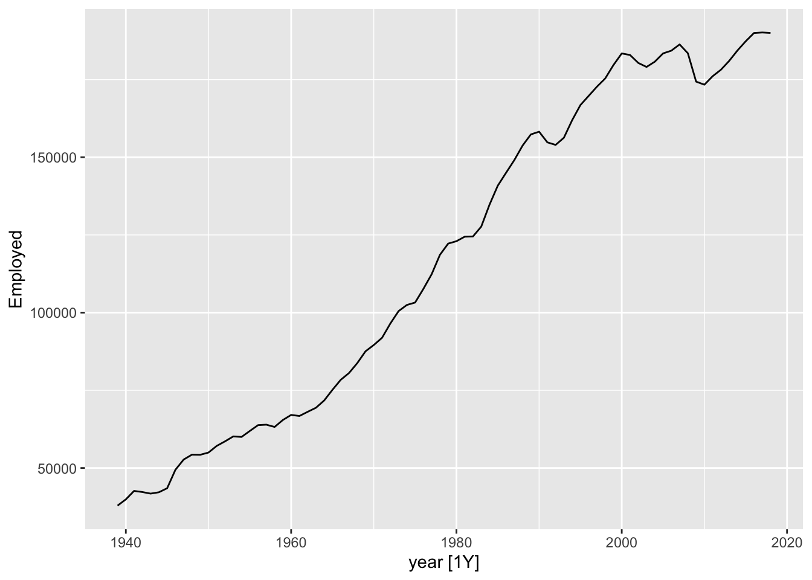
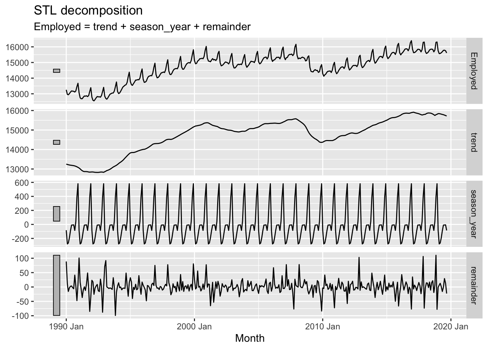

Code
library(tidyverse)
library(fpp3)
library(forecast)
library(fable)In previous posts on time series, we decomposed then applied a common general purpose modelling strategy for working with time series data called ARIMA. ARIMA model can involve autoregressive components (AR(p)), integration/differencing components (I(d)), and moving average components (MA(q)). As we saw, the time series data can also be pre-transformed, in ways other than just differencing; the example of this we saw was the application of the Box-Cox transformation for regularising the variance of the outcome, and includes logging of values as one possible transformation within the framework.
The data we used previous was annual data, showing the numbers of airmiles travelled in the USA by year up to the 1960s. Of course, however, many types of time series data are sub-annual, reported not just by year, but by quarter, or month, or day as well. Data disaggregated into sub-annual units often exhibit seasonal variation, patterns that repeat themselves at regular intervals within a 12 month cycle. 1
In this post we will look at some seasonal data, and consider two strategies for working with this data: STL decomposition; and Seasonal ARIMA (SARIMA).
Let’s continue to use the examples and convenience functions from the forecast package used in the previous post, and for which the excellent book Forecasting: Principles and Practice is available freely online.
First some packages
library(tidyverse)
library(fpp3)
library(forecast)
library(fable)Now some seasonal data
# Using this example dataset: https://otexts.com/fpp3/components.html
data(us_employment)
us_retail_employment <- us_employment |>
filter(Title == "Retail Trade")
us_retail_employment# A tsibble: 969 x 4 [1M]
# Key: Series_ID [1]
Month Series_ID Title Employed
<mth> <chr> <chr> <dbl>
1 1939 Jan CEU4200000001 Retail Trade 3009
2 1939 Feb CEU4200000001 Retail Trade 3002.
3 1939 Mar CEU4200000001 Retail Trade 3052.
4 1939 Apr CEU4200000001 Retail Trade 3098.
5 1939 May CEU4200000001 Retail Trade 3123
6 1939 Jun CEU4200000001 Retail Trade 3141.
7 1939 Jul CEU4200000001 Retail Trade 3100
8 1939 Aug CEU4200000001 Retail Trade 3092.
9 1939 Sep CEU4200000001 Retail Trade 3191.
10 1939 Oct CEU4200000001 Retail Trade 3242.
# ℹ 959 more rowsThere are two differences we can see with this dataset compared with previous time series data we’ve looked at.
Firstly, the data looks like a data.frame object, or more specifically a tibble() (due to the additional metadata at the top). In fact they are of a special type of tibble called a tsibble, which is basically a modified version of a tibble optimised to work with time series data. We can check this by interrogating the class attributes of us_employment:
class(us_retail_employment)[1] "tbl_ts" "tbl_df" "tbl" "data.frame"These class attributes go broadly from the most specific type of object class: tbl_ts (the tsibble); to the most general type of object class: the data.frame.
Secondly, we can see that the data are disaggregated not by year as in the last post’s example, but also by month. So, what does this monthly data actually look like?
autoplot(us_retail_employment, Employed) +
labs(y = "Persons (thousands)",
title = "Total employment in US retail")
This data looks… spikey. There’s clearly both a long-term trend - including periods of faster and slower growth, and occasionally some falls - but there’s also what looks like a series of near-vertical spikes along this trend, at what may be regular intervals. What happens if we zoom into a smaller part of the time series?
autoplot(
us_retail_employment |>
filter(year(Month) >=1990),
Employed) +
labs(y = "Persons (thousands)",
title = "Total employment in US retail")
Here we can start to see there’s not just a single repeating ‘vertical spike’, but a pattern that appears to repeat within each year, for each year. Let’s zoom in even further, for just three years:
autoplot(
us_retail_employment |>
filter(between(year(Month), 1994, 1996)),
Employed) +
labs(y = "Persons (thousands)",
title = "Total employment in US retail")
Although each of these three years is different in terms of the average number of persons employed in retail, they are similar in terms of having a spike in employment towards the end of the year, then a drop off at the start of the year, then a relative plateau for the middle of the year.
This is an example of a seasonal pattern, information that gets revealed about a time series when we use a sub-annual resolution that might not be apparent it we used only annual data. How do we handle this kind of data?
Of course we could simply reaggregate the data to an annual series:
us_retail_employment |>
mutate(
year = year(Month)
) |>
ungroup() |>
index_by(year) |>
summarise(
Employed = sum(Employed)
) %>%
autoplot(., Employed)
One thing we can notice with this is that there appears to be a big drop in total employment for the last year. This is likely because the last year is incomplete, so whereas previous years are summing up 12 months’ observations, for the last year a smaller number of months are being summed up. We could then drop the last year:
us_retail_employment |>
mutate(
year = year(Month)
) |>
ungroup() |>
index_by(year) |>
summarise(
Employed = sum(Employed)
) |>
filter(year != max(year)) %>%
autoplot(., Employed)
But then we are losing some data that we really have. Even if we don’t have the full year, we might be able to get a sense from just the first few months worth of data whether the overall values for the last year are likely to be up or down compared to the same month in the previous years. We could even turn this single annual time series into 12 separate series: comparing Januaries with Januaries, Februaries with Februaries, and so on.
us_retail_employment |>
mutate(
year = year(Month),
month = month(Month, label = TRUE )
) |>
ggplot(
aes(year, Employed)
) +
facet_wrap(~month) +
geom_line()Here we can see that comparing annual month-by-month shows a very similar trend overall. It’s as if each month’s values could be thought of as part of an annual ‘signal’ (an underlying long-term trend) plus a seasonal adjustment up or down: compared with the annual trend, Novembers and Decembers are likely to be high, and Januaries and Februaries to be low; and so on.
It’s this intuition - That we have a trend component, and a seasonal component - which leads us to our second strategy: decomposition.
The basic intuition of decomposition is to break sub-annual data into a series of parts: The underling long term trend component; and repeating (usually) annual seasonal component.
A common method for performing this kind of decomposition is known as STL. This actually stands for Seasonal and Trend Decomposition using Loess (Where Loess is itself another acronym). However it’s heuristically easier to imagine it stands for Season-Trend-Leftover, as it tends to generate three outputs from a single time-series input that correspond to these three components. Let’s regenerate the example in the forecasting book and then consider the outputs further:
us_retail_employment |>
filter(year(Month) >= 1990) |>
model(
STL(Employed ~ trend(window = 7) +
season(window = "periodic"),
robust = TRUE)) |>
components() |>
autoplot()
The plotted output contain four rows. These are, respectively:
So, what’s going on?
STL uses an algorithm to find a repeated sequence (the seasonal component) in the data that, once subtracted from a long term trend, leaves a remainder (set of errors or deviations from observations) that is minimised in some way, and ideally random like white noise.
If you expanded the code chunk above, you will see two parameters as part of the STL model: the window argument for a trend() function; and the window argument for a season() function. This implies there are ways of setting up STL differently, and these would produce different output components. What happens if we change the window argument to 1 (which I think is its smallest allowable value)?
us_retail_employment |>
filter(year(Month) >= 1990) |>
filter(year(Month) <= 2017) |>
model(
STL(Employed ~ trend(window = 1) +
season(window = "periodic"),
robust = TRUE)) |>
components() |>
autoplot()
Here the trend component becomes, for want of a better term, ‘wigglier’. And the remainder term, except for a strange data artefact at the end, appears much smaller. So what does the window argument do?
Conceptually, what the window argument to trend() does is adjust the stiffness of the curve that the trendline uses to fit to the data. A longer window, indicated by a higher argument value, makes the curve stiffer, and a shorter window, indicated by a lower argument value, makes the curve less stiff. We’ve adjusted from the default window length of 7 to a much shorter length of 1, making it much less stiff.2 Let’s look at the effect of increasing the window length instead:
us_retail_employment |>
filter(year(Month) >= 1990) |>
model(
STL(Employed ~ trend(window = 31) +
season(window = "periodic"),
robust = TRUE)) |>
components() |>
autoplot()
Here we can see that, as well as the trend term being somewhat smoother than when a size 7 window length was used, the remainder term, though looking quite noisy, doesn’t really look random anymore. In particular, there seems to be a fairly big jump in the remainder component in the late 2000s. The remainder series also does not particularly stationary, lurching up and down at particular points in the series.
In effect, the higher stiffness of the trend component means it is not able to capture and represent enough signal in the data, and so some of that ‘signal’ is still present in the remainder term, when it should be extracted instead.
Now what happens if we adjust the window argument in the season() function instead?
us_retail_employment |>
filter(year(Month) >= 1990) |>
model(
STL(Employed ~ trend(window = 7) +
season(window = 5),
robust = TRUE)) |>
components() |>
autoplot()
In the above I’ve reduced the season window size (by default it’s infinite). Whereas before this seasonal pattern was forced to be constant for the whole time period, this time we an see that it changes, or ‘evolves’, over the course of the time series. We can also see that the remainder component, though looking quite random, now looks especially ‘spiky’, suggesting that the kinds of residuals left are somewhat further from Guassian white noise than in the first example.
STL decomposition is one of a number of strategies for decomposition available to us. Other examples are described here. However the aims and principles of decomposition are somewhat similar no matter what approach is used.
Having performed a decomposition on time series data, we could potentially apply something like an ARIMA model to the trend component of the data alone for purposes of projection. If using a constant seasonal component, we could then add this component onto forecast values from the trend component, along with noise consistent with the properties of the remainder component. However, there is a variant of the ARIMA model specification that can work with this kind of seasonal data directly. Let’s look at that now
SARIMA stands for ‘Seasonal ARIMA’ (where of course ARIMA stands for Autoregressive-Integrated-Moving Average). Whereas an ARIMA model has a specification shorthand ARIMA(p, d, q), a SARIMA model has an extended specification: SARIMA(p, d, q) (P, D, Q)_S. This means that whereas ARIMA has three parameters to specify, a SARIMA model has seven. This might appear like a big jump in model complexity, but the gap from ARIMA to SARIMA is smaller than it first appears.
To see this it’s first noticing that, as well as terms p, d and q, there are also terms P, D and Q. This would suggest that whatever Autoregressive (p), integration (d) and moving average (q) processes are involved in standard ARIMA are also involved in another capacity in SARIMA. And what’s this other capacity? The clue to this is in the S term.
S 3 stands for the seasonal component of the model, and specifies the number of observations that are expected to include a repeating seasonal cycle. As most seasonal cycles are annual, this means S will be 12 if the data are monthly, 4 if the data are quarterly, and so on.
The UPPERCASE P, D and Q terms then specify which standard ARIMA processes should be modelled as occurring every S steps in the data series. Although algebraically this means SARIMA models may look a lot more complicated than standard ARIMA models, it’s really the same process, and the same intuition, applied twice: to characterising the seasonal ‘signals’ in the time series, and to characteristing the non-seasonal ‘signals’ in the time series.
Although there are important diagnostic charts and heuristics to use when determining and judging which SARIMA specification may be most appropriate for modelling seasonal data, such as the PACF and ACF, we can still use the auto.arima() function to see if the best SARIMA specification can be identified algorithmically:
best_sarima_model <- auto.arima(as.ts(us_retail_employment, "Employed"))
best_sarima_modelSeries: as.ts(us_retail_employment, "Employed")
ARIMA(1,1,2)(2,1,2)[12]
Coefficients:
ar1 ma1 ma2 sar1 sar2 sma1 sma2
0.8784 -0.8428 0.1028 -0.6962 -0.0673 0.2117 -0.3873
s.e. 0.0374 0.0481 0.0332 0.0977 0.0691 0.0937 0.0776
sigma^2 = 1442: log likelihood = -4832.08
AIC=9680.16 AICc=9680.31 BIC=9719.06Here auto.arima() produced an ARIMA(1, 1, 2) (2, 1, 2)_12 specification, meaning p=1, d=1, q=2 for the non-seasonal part; and P=2, D=1, Q=2 for the seasonal part.
What kind of forecasts does this produce?
best_sarima_model |>
forecast(h=48) |>
autoplot()We can see the forecasts tend to repeat the seasonal pattern apparent throughout the observed data, and also widen in the usual way the further we move from the observed data.
In this post we have looked at three approaches for working with seasonal data: aggregating seasonality away; decomposition; and SARIMA. These are far from an exhaustive list, but hopefully illustrate some common strategies for working with this kind of data.
Occasionally, we might also see repeated patterns over non-annual timescales. For example, we might see the apparent population size of a country shifting abruptly every 10 years, due to information from national censuses run every decade being incorporated into the population estimates. Or if we track sales by day we might see a weekly cycle, because trade during the weekends tends to be different than during the weekdays.↩︎
How this works is due to the acronym-in-the-acronym: LOESS, meaning local estimation. Effectively for each data point a local regression slope is calculated based on values a certain number of observations ahead and behind the value in question. The number of values ahead and behind considered is the ‘window’ size.↩︎
Sometimes m is used instead of S.↩︎